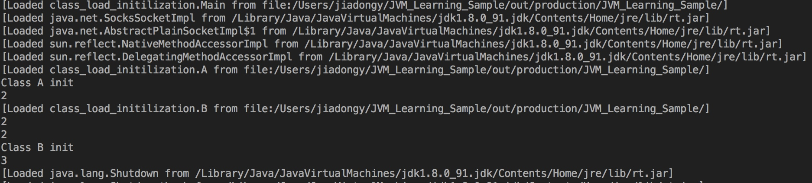

Java集合类综述(in java.util)
- 前置知识: Java基础 集合类基础(jdk1.8)
Map(字典)
该接口不基于Collection
HashMap/LinkedHashMap/TreeMap比较
| HashMap | LinkedHashMap | TreeMap | ||
|---|---|---|---|---|
| 继承 | 父接口 | Map | Map | NavigableMap1 |
| 父类 | AbstractMap | HashMap | AbstractMap | |
| 数据存储 | 底层结构 | 数组+(链表/红黑树) | 同HashMap+双向链表 | 红黑树 |
| 复杂度 | 插入 | O(1) | 同HashMap | O(lgN) |
| 删除 | O(1) | 同HashMap | O(lgN) | |
| 查找 | O(1) | 同HashMap | O(lgN) | |
| 有序性 | 迭代顺序 | / | 插入顺序/访问顺序 | 自然序/自定义 |
| 支持Navigate | 否 | 同HashMap | 是 | |
| 哈希 | 哈希函数 | 基于HashCode()高/低位2 | 同HashMap | / |
| 桶定位法 | 位运算3 | 同HashMap | / | |
| 冲突处理 | 转换成链表/红黑树4 | 同HashMap | / | |
| 扩容机制 | 初始容量 | 163 | 同HashMap | / |
| 最大容量 | 1 << 30(231 ) | 同HashMap | / | |
| 负载因子 | 0.755 | 同HashMap | / | |
| 扩容策略 | 2倍3 | 同HashMap | / | |
| 扩容时机 | 插入后6 | 同HashMap | / | |
| 具体操作 | 在新数组中重排所有元素 | 同HashMap | / | |
| 保持迭代顺序 | 否7 | 同HashMap | / | |
| 序列化 | 典型优化 | 跳过数组null位置 | 同HashMap8 | / |
| transient9 | size/modCount10; table/entrySet; | 同HashMap; head/tail8; | size/modCount; root11; | |
| 同步 | 线程安全 | 否 | 同HashMap | 否 |
| final | Entry.hash/key | 同HashMap | 无 |
Set(集合)
该接口基于Collection
HashSet/LinkedHashSet/TreeSet比较
Set实现内部使用了Map实现,所以其特性和Map对应项类似
List(列表)
该接口基于Collection
ArrayList/LinkedList/Vector比较
| ArrayList | LinkedList | Vector | ||
|---|---|---|---|---|
| 继承 | 父接口 | List/RandonAccess | List/Deque | List/RandonAccess |
| 父类 | AbstractList | AbstractSequentialList | AbstractList | |
| 数据存储 | 底层结构 | 数组 | 双向链表12 | 数组 |
| 复杂度 | 插入 | O(N) | O(1) | O(N) |
| 删除 | O(N) | O(1) | O(N) | |
| 查询 | O(1) | O(N) | O(1) | |
| 容量 | 初始容量 | 10 | 0 | 10 |
| 最大容量 | Integer.Max | Integer.Max | Integer.Max | |
| 扩容 | 时间点 | 插入前 | / | 插入前 |
| 策略 | 1.5倍 | / | 默认为2倍 | |
| 主要耗时点 | 拷贝数组13 | / | 拷贝数组 | |
| 同步 | 线程安全 | 无 | 无 | 是(synchronized) |
| 序列化 | 优化策略 | 跳过数组空白的尾部 | / | 无 |
| transient | elementData; | size; first/last; | 无14 |
Queue/Deque(队列/双端队列)
该接口基于Collection
LinkedList/PriorityQueue/ArrayDeque比较
| LinkedList | PriorityQueue | ArrayDeque | ||
|---|---|---|---|---|
| 继承 | 父接口 | List/Deque | Queue | Deque |
| 父类 | AbstractSequentialList | AbstractQueue | AbstractCollection | |
| 数据存储 | 数据结构 | 列表/双端队列 | 优先队列 | 双端队列 |
| 底层结构 | 双向链表 | 最小堆/最大堆15(数组) | 循环数组 | |
| Usage | 插入null元素 | 支持 | 不支持16 | 不支持17 |
| 有序性 | 出队有序性 | / | 自然序/自定义 | / |
| 迭代有序性 | / | 无 | / | |
| 复杂度 | 插入 | O(1) | O(lgN) | O(N) |
| 删除 | O(1) | O(lgN) | O(N) | |
| 查询 | O(N) | O(lgN) | O(1) | |
| 入队 | O(1) | O(lgN) | O(1) | |
| 出队 | O(1) | O(lgN) | O(1) | |
| 扩容 | 初始容量 | / | 11(1+2+4+4) | 8 |
| 最小容量 | / | 218 | 8 | |
| 时间点 | / | 插入前 | 插入后 | |
| 判断条件 | / | index >= queue.length | head==tail | |
| 策略 | / | 新容量<=64为2倍,否则为1.5倍 | 2倍 | |
| 序列化 | 优化策略 | / | 删除空白位置,但size不小于2 | 删除空白位置 |
| transient | size; first/last; | queue; modCount; | elements; head/tail; | |
| 同步 | 线程安全 | 否 | 否 | 否 |
Reference
- Java 8系列之重新认识HashMap
- 深入理解哈希表
- Java 核心技术点之集合框架
- LinkedHashMap
- List 总结
- 【集合框架】JDK1.8源码分析HashSet && LinkedHashSet（八）
- JDK中优先级队列PriorityQueue实现分析
-
通过
NavigableMap(扩展自SortedMap)接口,程序可以通过Entry之间的大小顺序,访问某个Entry相邻的Entry↩ -
一共两次哈希:第一次:Object.hashCode()返回32位整数;地二次:对第一次哈希值的低位和高位做乘方运算,保证所有数字都参与计算,防止Hash聚集现象 ↩
-
定位元素位于哪个bucket中一般使用求模运算
index = hash % length,HashMap中使用较之更快的等效位运算index = hash & (length - 1),条件是数组length必须满足2n .受影响参数包括初始容量/最大容量/扩容策略.使用位运算的代价是:如果length为素数,HashMap不容易产生Hash冲突,但这是一个trade-off ↩ -
since jdk1.8,当元素过于集中在一个bucket时,由链表转成红黑树;反之由红黑树转成链表 ↩
-
loadFactor>0即可;负载因子越大,同样内存HashMap能容纳元素越多,Hash冲突可能性越大,各个操作的复杂度越大 ↩ -
插入后检测扩容比插入前要差,无法避免无谓的扩容(即之后不在put元素的场景) ↩
-
由于resize后各个元素的hash值可能发生变化,所以无法保证迭代器遍历的顺序,主要体现在在原数组中靠前的元素在新数组中靠后,而且如果假设hash函数是平均分布的话,该种情况出现的概率为50%(eg.元素hash=31,old_array.length=16,new_array.length=32,元素位置从15变成31).有趣的是,jdk1.8的HashMap利用了这种现象来降低resize时重新计算元素位置的开销 ↩
-
head/tail为双向链表的头结点和尾节点,由于使用其父类的序列化方法,因此反序列之后需要重新生成双向链表,这是在新建节点的newNode()中实现的;访问/插入/删除方法中对双向链表的操作会通过Override父类的Hook方法实现 ↩ -
transient修饰的变量不会被Java默认的序列化器处理,需要程序自己OverloadwriteObject()和readObject()方法 ↩ -
modCount记录结构变化的次数(eg.插入新元素/删除老元素) ↩ -
红黑树的根节点 ↩
-
讲道理是可以用单向链表的,但是由于该类被官方推荐来模拟Stack/Queue/Deque,因此使用了双向链表,该类能够毫不费力的兼容这些数据结构 ↩
-
执行拷贝数组的方法是
Arrays.copy(),底层native方法是arraycopy(),对数组元素的拷贝都是浅拷贝.可以用简单的实验表明:当原数组的元素数量超过106 时,耗时超过1ms;当原数组元素数量超过107 时,耗时超过5ms ↩ -
由于历史原因
Vector(since jdk1.0)没有对序列化做优化,数组尾部的空白片段依然会被保留,官方也推荐使用更新的集合类(since jdk1.2)来代替它 ↩ -
默认是二叉最小堆(默认的
comparator来自于SortedSet) ↩ -
null元素是被删除的元素留下的空位置/还没有添加元素的空位置,是个重要的
remove()判断条件,所以不能插入null元素 ↩ -
原因类似
PriorityQueue,循环数组中中间有一段是null的,null是数组中的空位置 ↩ -
该最小容量是由序列化
writeObject()方法保证,保证树二叉堆至少有两层 ↩
类的循环初始化是否会引起死锁?
- 前置知识: Java基础 类的生命周期
场景设计和推测
- 情况:
- 在类A中的初始化中实例化B
- 在类B的初始化中实例化A
- 类设计
- A类:
- 静态变量
a=new B();静态变量a1=1(之后在静态初始化块里赋值为2); - 实例变量
a2=11(之后再初始化块中赋值为12); - 构造函数;
- 静态变量
- B类:
- 静态变量
b=new A();静态变量b1=3(之后在静态初始化块里赋值为4); - 实例变量
b2=21(之后再初始化块中赋值为22); - 构造函数;
- 静态变量
- A类:
- 猜想执行结果: 由于类初始化之后类实例化,所以A类初始化需要B实例化,B实例化又需要A初始化,造成循环依赖,最终结果为死锁
- 打点位置:
- 类加载结束点(text: Loaded Main2 from file)
- 类初始化开始点/结束点(text: Class A2 init)
- 实例初始化开始点/结束点(text: Instance A2 init)
- 构造函数结束点(text: Instance A2 new)
场景代码
class A2 {
static {
System.out.println("Class A2 init start");
}
static B2 a = new B2();
static int a1 = 1;
{
System.out.println("Instance A2 init start. \ta=" + a + " \ta1=" + a1 + " \ta.b2=" + (a == null ? "NPE" : a.b2) + " \tb=" + B2.b + " \tb1=" + B2.b1 + " \tb.a2=" + (B2.b == null ? "NPE" : B2.b.a2));
}
public int a2 = 11;
static {
a1 = 2;
System.out.println("Class A2 init end. \ta=" + a + " \ta1=" + a1 + " \ta.b2=" + (a == null ? "NPE" : a.b2) + " \tb=" + B2.b + " \tb1=" + B2.b1 + " \tb.a2=" + (B2.b == null ? "NPE" : B2.b.a2));
}
{
a2 = 12;
System.out.println("Instance A2 init end. \ta=" + a + " \ta1=" + a1 + " \ta.b2=" + (a == null ? "NPE" : a.b2) + " \tb=" + B2.b + " \tb1=" + B2.b1 + " \tb.a2=" + (B2.b == null ? "NPE" : B2.b.a2));
}
public A2() {
System.out.println("Instance A2 new. \ta=" + a + " \ta1=" + a1 + " \ta.b2=" + (a == null ? "NPE" : a.b2) + " \tb=" + B2.b + " \tb1=" + B2.b1 + " \tb.a2=" + (B2.b == null ? "NPE" : B2.b.a2));
}
}
class B2 {
static {
System.out.println("Class B2 init start");
}
static A2 b = new A2();
static int b1 = 3;
{
System.out.println("Instance B2 init start. \tb=" + b + " \tb1=" + b1 + " \tb.a2=" + (b == null ? "NPE" : b.a2) + " \ta=" + A2.a + " \ta1=" + A2.a1 + " \ta.b2=" + (A2.a == null ? "NPE" : A2.a.b2));
}
public int b2 = 21;
static {
b1 = 4;
System.out.println("Class B2 init end. \tb=" + b + " \tb1=" + b1 + " \tb.a2=" + (b == null ? "NPE" : b.a2) + " \ta=" + A2.a + " \ta1=" + A2.a1 + " \ta.b2=" + (A2.a == null ? "NPE" : A2.a.b2));
}
{
b2 = 22;
System.out.println("Instance B2 init end. \tb=" + b + " \tb1=" + b1 + " \tb.a2=" + (b == null ? "NPE" : b.a2) + " \ta=" + A2.a + " \ta1=" + A2.a1 + " \ta.b2=" + (A2.a == null ? "NPE" : A2.a.b2));
}
public B2() {
System.out.println("Instance B2 new. \tb=" + b + " \tb1=" + b1 + " \tb.a2=" + (b == null ? "NPE" : b.a2) + " \ta=" + A2.a + " \ta1=" + A2.a1 + " \ta.b2=" + (A2.a == null ? "NPE" : A2.a.b2));
}
}
class Main2 {
static public void main(String... args) {
System.out.println("A2 a=" + A2.a);
System.out.println("A2 a1=" + A2.a1);
System.out.println("A2 a2=" + B2.b.a2);
System.out.println("B2 b=" + B2.b);
System.out.println("B2 b1=" + B2.b1);
System.out.println("B2 b2=" + A2.a.b2);
}
}
执行结果分析
程序输出结果:
1. [Loaded Main2 from file:/Users/jiadongy/JVM_Learning_Sample/out/production/JVM_Learning_Sample/]
2. [Loaded A2 from file:/Users/jiadongy/JVM_Learning_Sample/out/production/JVM_Learning_Sample/]
3. Class A2 init start
4. [Loaded B2 from file:/Users/jiadongy/JVM_Learning_Sample/out/production/JVM_Learning_Sample/]
5. Class B2 init start
6. Instance A2 init start. a=null a1=0 a.b2=NPE b=null b1=0 b.a2=NPE
7. Instance A2 init end. a=null a1=0 a.b2=NPE b=null b1=0 b.a2=NPE
8. Instance A2 new. a=null a1=0 a.b2=NPE b=null b1=0 b.a2=NPE
9. Class B2 init end. b=A2@61bbe9ba b1=4 b.a2=12 a=null a1=0 a.b2=NPE
10. Instance B2 init start. b=A2@61bbe9ba b1=4 b.a2=12 a=null a1=0 a.b2=NPE
11. Instance B2 init end. b=A2@61bbe9ba b1=4 b.a2=12 a=null a1=0 a.b2=NPE
12. Instance B2 new. b=A2@61bbe9ba b1=4 b.a2=12 a=null a1=0 a.b2=NPE
13. Class A2 init end. a=B2@610455d6 a1=2 a.b2=22 b=A2@61bbe9ba b1=4 b.a2=12
14. A2 a=B2@610455d6
15. A2 a1=2
16. A2 a2=12
17. B2 b=A2@61bbe9ba
18. B2 b1=4
19. B2 b2=22
把它转化为下面的表格,更加清晰地描述A/B各个阶段执行的过程:
| A | B |
|---|---|
| A类加载完成 | |
| A类初始化 - 开始 | |
| B类加载完成 | |
| B类初始化 - 开始 | |
| A类实例初始化 - 开始 | |
| A类实例初始化 - 结束 | |
| A类实例构造函数执行完成 | |
| B类初始化 - 结束 | |
| B类实例初始化 - 开始 | |
| B类实例初始化 - 结束 | |
| B类实例构造函数执行完成 | |
| A类初始化 - 结束 |
可以看到在A类初始化的过程中,A类被实例化了(并且该阶段正常结束了),也就是说类的初始化阶段并不是原子的/排他的.
如在本例中,A类实例化阶段的结束早于其类初始化阶段,A类实例化完成时,A类的静态变量还未被初始化.
Reference.1中已经描述了这种情况:
加载/验证/准备/初始化和卸载这5个阶段的顺序是确定的,类的加载过程必须按照这种顺序按部就班的开始…注意,这里笔者写的是按部就班的"开始",而不是按部就班的"进行"或"完成",强调这点是因为这些阶段通都是相互交叉混合式进行的,通常会在一个阶段执行的过程中调用/激活另外一个阶段
<<深入理解Java虚拟机>>P210
总结
- 类的循环初始化不会引起死锁
- 5个阶段的开始是有顺序的,结束则不一定
- 阶段不是排他的/临界的
- 循环初始化可能引起意料之外的情况,尽量避免
- eg.类在初始化过程中修改另一个类的变量,导致另一个类得到了意料之外的初始值
Reference
类的生命周期
*前置知识: Java基础
Example: 多个类的初始化
package me;
class A {
static int a = 1;
static {
a = 2;
System.out.print("A init");
}
static int getA(){
return a;
}
}
class B extends A{
static int b = 1;
static {
b = 2;
System.out.print("B init");
}
}
class Main {
static public void main(String... args){
System.out.print(A.a);//0
System.out.print(B.a);//1
System.out.print(B.getA());//2
System.out.print(B.b);//3
}
}
在进入正文前,首先根据上面的例子试图猜测:为了Main类中的main()函数能够运行,JVM需要做哪些前置工作呢?这些工作是以什么顺序展开的呢?
为了更好的描述多个类的情形,可以先试图描述一个更简单的例子:把行1和行2和行3注释掉.
类:从0到1
一句话: 把类从介质中复制到JVM方法区,通过各种规则验证和符号解析,最后根据程序员的逻辑赋值或其他语句完成初始化
类的加载(Loading)
加载是把存储类的实体从各类介质(文件/网络/数据库/内存中实时生成等)加载到JVM的方法区中的过程,主要包含2步:
- 根据类的全限定名"me.B"通过 ApplicationClassLoader(或者是自己定义的ClassLoader)获得B类的二进制流
- 把流读入内存中,并转化为JVM规定的方法区结构,生成对应的
java.lang.Class对象
现在,你可以在程序中访问到这个类~(≧▽≦)/~啦
类的连接(Linking)
JVM中的连接细分为独立的3步:验证/准备/解析
验证和准备的开始是有严格的顺序的,但是JVM可以自由选择解析发生的时机,甚至放到初始化之后
连接可以理解为把源代码转化为可执行程序的过程,当然不同于C/C++连接生成的.exe程序,JVM中的可执行程序一般是字节码(bytecode)程序
验证(Validation)
验证过程较为复杂,JVM主要验证了class文件格式/java语义限制/java程序逻辑正确性和安全性,其主要技术为静态的字节码分析,所以不能保证100%的可靠
准备(Preparation)
为me.B类中的静态变量int b在堆中分配内存,并设置其初始值0
解析(Resolution)
简单地说,是将符号引用转化为直接引用的过程,所有符号引用都必须转化为直接引用
符号引用: 如方法名/变量名/类等等的符号
直接引用: 直接指向一块内存区域
类的初始化(Initialization)
在初始化之前,程序已经可以在内存中访问到me.B类和其类变量了
初始化所做的事情也很简单:JVM从上到下收集类变量赋值语句和类静态初始化块中的语句,把它放到JVM生成的<clinit>()方法中,再执行之
对于初始化的时机,JVM有严格的规范:只有在主动引用时才会触发类的初始化
主动引用有5种情况:大致可以理解为以下几种
1. 以各种方式读静态变量/写静态变量/触发静态方法时(包括出现相应的字节码指令/反射/invokedynamic)类却没有初始化
2. 包含入口方法main()的类
3. 初始化子类时父类还没初始化
其他情况都是被动引用
可以看到,me.B的<clinit>()方法中执行了下列代码:
b = 1;
b = 2;
System.out.print("B init");
类:从1到n再到0
类的使用(Using)
类的实例化过程,包括new/反射等方法
类的卸载(Unloading)
当程序中无论什么方法都无法引用该类时,类从方法区被回收,大致可以理解为
- 类的所有实例被回收
- 类的ClassLoader被回收
- 没有地方引用Class对象,也无法通过反射访问
Example:执行过程简述
回到最初的例子,可以列出预计的执行顺序为:
- 初始化
me.Main - 加载
me.B - 初始化
me.A: 输出"A init" System.out.print(A.a);:输出2System.out.print(B.a);:输出2System.out.print(B.getA());:输出2- 初始化
me.B:输出"B init" System.out.print(B.b);:输出2
实际执行结果验证:

Reference
Copyright © 2016 Powered by Jiadongy, Theme used GitHub CSS. 总访问 (O_O)? 次